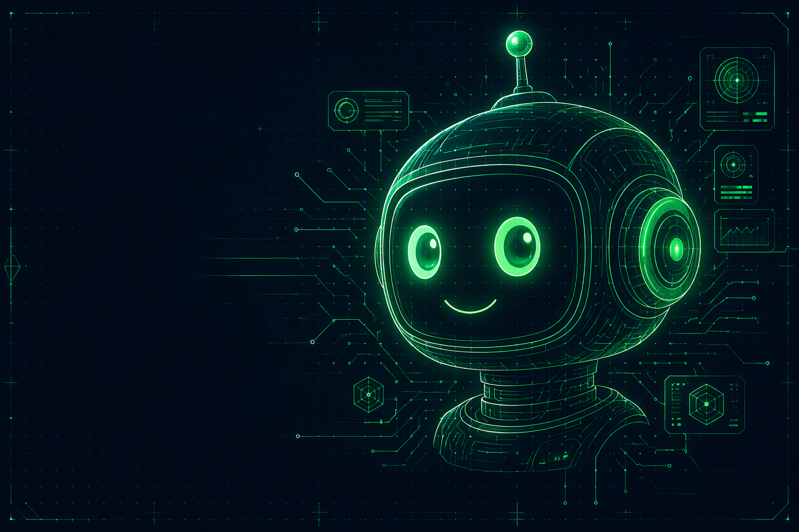

A veteran-led nonprofit deploying robotics programs, STEM kits, and a mobile maker space to underserved communities. Free. Hands-on. Grades 4–10.

Blade geometry, battery packs, and sixty very serious young engineers.
2025.02.14TECHDuct tape, cardboard, and an introduction to aerodynamics that stuck.
2025.01.20TECHCircuits, resistors, and the exact moment a room full of kids lights up.
Every donation converts directly into parts, kits, and van miles. Overhead is covered by our founders — your contribution goes straight to the workshop floor.
Transmit Donation via Square